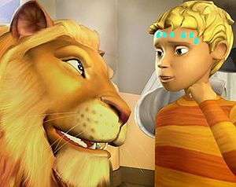

Animalia (serie)
 De: La Frikipedia, la enciclopedia extremadamente seria.
De: La Frikipedia, la enciclopedia extremadamente seria.

|
ATENCIÓN
Este artículo contiene demasiados tachones y en vez de provocar gracia, parece los apuntes de un niño de preescolar. Ya puede ser porque el autor es un novato, bien es un topo sin vista, o simplemente algún n00b que se cree que abusar del chiste mierdoso mola y no se da cuenta que jode bastante el artículo. Así que coge la goma de borrar y discusión del artículo, puede que te ayude en algo.
|

|
ATENCIÓN
Este artículo es fruto de un momento maricona. No es el tipo de artículos que queremos en la Frikipedia ya que consiste solamente en críticas destructivas hacia algo, sin ánimo de sátira o de risa. Es probable que varios usuarios se hayan quejado por el contenido del artículo o lo hayan calificado de ofensivo. ¡Mejora la Frikipedia des-mariconizando el artículo!
|
| De la serie animales y otros bichejos:
|
|
|
| Nombre común:
|
Animalia
|
| Nombre científico:
|
Animalitus weonitus
|
| Especie:
|
Animal
|
| Subespecie:
|
Tu
|
| Alimentación:
|
Una bola de acero con mierda
|
| Apariencia:
|
como una Seria Televisiva de Weones Online (STWO)
|
| Hábitat natural:
|
La Selva Cagada de Weanimalia (SCW)
|
| Localización:
|
Lo mismo de arriba
|
| Número aproximado de ejemplares:
|
Miles de millones de billones
|
| Fecha de extinción:
|
Para el 344 del mes Weonsember en 2012
|
| Pokemonización:
|
Cualquier mierda con patas y ojos
|
Para otros usos de este término/definición/cosa, véase Animalia (desambiguación).
Historia
La (pa q decirlo) comienza cuando Zoe y Alex (dos pendejos de mierda) pasean por la ciudad en la q estos dos viven haciendo el amor en la que viven hasta que deciden acudir al sexo por razones desconocidas. Una vez allí, son sexotransportados a un extra-ordinario mundo (de puta mierda)en el que los putos animales pueden hablar y leer (¿Que hay de diferencia con los de verdad?). Aparentemente (como siempre), el reino de putos animales gilipollas que hablan Animalia se caracteriza por ser un lugar asaltado y cagado. Sin embargo, la repentina llegada de Zex y X-Sex coincide con toda una serie de acontecimientos extraños que ponen en peligro la armonía de su mierda, como: Pájaros cagando, iguanas cagando, pitones cagando, pero no caca, si no niños indefensos, tambien perras, zorros, huevos de pascua, el arbolito de navidad.
En (ya nombrado) Alex y Zoe deberán tener sexo a este mágico mundo cuando esté amenazado por extraños sucesos (sucesos arriba). A lo largo de sus aventuras de mierda, jajaja han de aprender a cagar con los habitontos de este nuevo mundo , como Aymepicalamierda, una cagada extraña cocodrila; Tyrasexicus, un gilipollas de tigre; Livingsex, el león violador soberano de mierda, jajajaj de puta mierda mencionada muchas veces antes uy, y algunos cerdos que enrealidad tienen más inteligencia y sentido común muy, muy cagaderos, anday puro cagando pa decir.
‘Animalia’ esta producida para la BBC (Bobos de Bob esponja Creados por el) por Boboman/Mierda Mono/Pasta Base, en asociación con Pornonohaylight Aburriment (Conocido por PA,faltaria Pa caga la mierda jajaja). Ejercen como idiotas gilipollas de la serie Busco-a Johnson me debe dinero, Ey Burnett (un coctél con patas y ojos), Ay Popelle (Jajajaja, el comemierdas volador), El pejelagarto volador (Las alas estan hechas de mierda) y el propio Pasta Base.
La serie muestra tres episodios hechos de mierda, seguro, ja seguidos come mierda y luego caga
Personajes por lo menos importantes
El nombre real es el que de verdad tienen, los otros los usan para ocultar sus verdaderos nombres
- Zoe (nombre real: Zex)=
Puta zorra Chica, acompañante de Alex (gilipollas de al lado, supuestamente un clon de Michael Jackson con mal aliento de cojones inmensamente grandes que no es capaz de agarrarsela) en todos los episodios (creados por la BBC)
- Alex (nombre real: X-Sex)=
gilipollas que se a corrido por los cojones a su madre Chico acompañante de Zex (la zorra de al lado, supuestamente un clon de barney que tuvo trabajo en solo 2 años por que luego la encontro COPYRIHGT) en todos los episodios (Cuando el sale el episodio se hace mierda y luego se vende en lata con el nombre Atún)
- Allegra (nombre real: aymepicalamierda)= Extraña cocodrila que tiene amigas
inmensamente zorras se cree el centro principal de atención, pero enrealidad es la más zorra de todos, su cualidad es picarse la mierda (tal como lo dice su nombre), desde chica tuvo q tener sexo con Chuck Norris Cuando ella sale en los episodios estos se hacen más mierda que antes y terminan cortando la escena siguiente, luego la cambian por comerciales (Por culpa de está serie ahora estan en todos los canales los comerciales)
 Se nota que X-Sex se está acalorando
- Tyrannicus (nombre real: Tyrasexicus)= Es un tigre gilipollas q tiene los cojones chiquititos porq no se le ven aunq sea mamifero, su nombre se refiere a que tiene el sexo con cualquiera, antes tenia la apariencia de Chuck Norris por eso AYMEPICALAMIERDA le tiene miedo y se hace de chora cuando este aparece en frente
pero aun asi se la agarra bien duro, el prometio que si algun dia se agarrara a aymepicalamierda ya estaria castrado
- Livingstone (nombre real: Livingsex)= El león violador, perdón, soberano de Weanimalia, es jovén (si, si, como no, y yo soy Chuck Norris).
Este Weón (León= Weón, no hay nada de diferencia), cuenta chistes súper-aburridisimos que nadie escucha porque es muy gilipollas
No es para nada amable (porque se la pasa cagando a los demás), cuando el sale en los episodios es porque a causado algún problema, por está razón logran echarlo de alguna forma (por muy weon, se lo merece)
- Bubu e Iggy (nombres reales: Caca verde y cojón amarillo) Caca verde= Es el peor amigo de todos, es enorme y color verde caca, es un gorila gilipollas adolescente en la etapa de ejecución primate (mierdas voladoras desde un paracaidas de Pikachu) Cojón amarillo= Se cree inmenso pero es solo una iguana en forma de cojón, de color amarillo pasa desapercibido cuando quiere robar cosas, cagar a los demás o agarrarse a alguien, el resultado de todo esto es que consigue que todos lo odien porque se dan cuenta, es la única iguana que deja un excremento amarillo con sangre
Personajes para nada importantes en la historia que habian participado en los teletubies
Estos personajes participaron en los teletubies y luego cambiaron a la serie Weanimalia es por eso que los teletubies se cancelaron
- Rina (nombre real: teletubie amarillo)= Esta rinaceronta es la responsable de la estufa de Weanimalia, y uno de los clones femeninos menos importantes de toda la maldita serie en forma de cojón. Su papel es muy diferente al de Livingsex (obvio porque es un personaje para nada importante), pero ella no pretende ser importante de este universo solo planea vengarse del reino agarrandose a todos y luego borrar las reglas de Weanimalia. Promueve la estupidez y facilita el acceso a la sexoinformación, es tonta, cagadera y teletubiosa (una forma de decir gay si es hombre y lesviana si es mujer).
- Elni y Erno (nombres reales: Cojón y Paja, en teletubies eran morados y rosados)= Cojón y Paja son los dueños del bar 'Las tortillas con semén'. No son populares por culpa de sus sabrosas tortillas con semén y su caracter acogedor. Pronto recibirán una insorpresa, un nuevo feto en forma de cojón en la familia, el feto
puto cojón de mierda, gilipollasTeletubie Arcoiris.
- Fucsia (nombre real: teletubie azul)= Fucsia es la prostitua del
cojóntigre Tyrasexicus, conoce todas sus armas de sexo y negocios porno. Detecta lo que quiere (obvio, sexo) su jefe ante de que lo sepa él mismo como si fuera a creer, está sabe lo que pasa obvio, porque su jefe siempre pide sexo, está engañada ya que algún día el tigre gilipollas se tirara a otra, sabe que es un gilipollas sexomanipulador, peor ella lo es más porque se lo pide y lo sexomanipula más. Es teletubiosa, espia y conoce mejor que nadie todo el sexo que sucede en Weanimalia.
- Dagmon (nombre real: espagueti volador de color verde, en teletubie era rojo)= espagueti volador de color verde vive en el "cojón más grande del mundo", un lugar de fantasía
por lo que no existe en el que pocos weanimales han estado porque no existe. Toda Weanimalia ha oído hablar de su espagueti verde, y a veces gastan su tiempo en verlo (sale muy a menudo con Paris Hilton) , por lo que las gilipollas leyendas sobre este espagueti han sido misteriosas falsas durante años. Los habitontos de Weanimalia temen a este espagueti de color verde, pero realmente es idiota, triste, y necesita porno weones para acompañarlo amigos.
- Meinfor y Melba (nombres reales: Rata con condón y Ratita zorra, en teletubies eran gris y marrón caca)= Mira, estos personajes son mierda y cuando aparecian en los capitulos se hacian de personas respetadas que en realidad a toda Weanimalia le importaba un condón, como a todo el programa les venia mal, incluso a ellos mismos, se hacia una pausa y mostraban un comercial de una peliculo de miedo ese dia a la misma hora y por eso salias de ahi e ibas a ver a la peliculo y dejaban de dar Weanimalia en tu ausencia, ahora bien te cagaste en los pantalones mientras comias palomitas con aceite de auto (mantequilla)
Autor(es):
- Dark temptation
- Diczy
- El príncipe de las tabernas
- Monomadrid
- Likan003
- X900
Frikipedia 2005-2016, Licencia
GFDL 1.2 - Extraído por FrikiLeaks